Descrição
Parabéns aos vencedores da Mostra Competitiva De Curtas:
Júri Oficial
Melhor Roteiro de Ficção
CAMILA TARIFA
“Menina Seta”
Melhor Roteiro de Documentário
BRUNA BARROS e BRUNA CASTRO
“À Beira do Planeta Mainha Soprou a Gente”
Júri Popular
Melhor Roteiro de Ficção
JULIANE ARGUELLO, GABRIELA NEVES e ANDRÉ MADRINI
“Santonino”
Melhor Roteiro De Documentário
CLARA HENRIQUES, ERICK CINDRA E LUIZA FRANÇA
“Quarta: Dia de Jogo”
Prêmio ROTA/REDE SINA
Melhor Curta de Temática Social
MARÇAL VIANNA
“Neguinho”
e
Menção Honrosa da Rede Sina
IZAH NEIVA
“Era Uma Vez em São Paulo”
Prêmio ROTA/KINOBOX
Curta XODÓ
ARIANY DE SOUZA
“Inspirações”
Prêmio ROTA/CARDUME
Melhor Curta
MARÇAL VIANNA
“Neguinho”
e
Menção Honrosa da Cardume
BRUNA BARROS e BRUNA CASTRO
“À Beira do Planeta Mainha Soprou a Gente”
Parabéns aos selecionados na Mostra Competitiva de Curtas!
MELHOR ROTEIRO DE FICÇÃO
FISICAMENTE - Gus Arruda Lins (São Paulo/SP)
FOME - Manda Ramoos (Goiânia/GO)
MENINA SETA - Camila Tarifa (Franco da Rocha/SP)
MIRAGEM - Bruna Guido, Clara Farias e Vitor Celso (Recife/PE)
NEGUINHO - Marçal Vianna (Nova Iguaçu/RJ)
RITUAL DE BELEZA - Fabio Salvador (São Paulo/SP)
SANTONINO - Juliane Arguello, Gabriela Neves, André Madrini (São Paulo/SP)
MELHOR ROTEIRO DE DOCUMENTÁRIO
À BEIRA DO PLANETA MAINHA SOPROU A GENTE - Bruna Barros e Bruna Castro (Salvador/BA)
A PRIMEIRA LUZ DO DIA - Felipe Vignoli e Ieda Lagos (Belo Horizonte/MG)
ENTREGADORES - Vinicius Ribeiro e Lucas Novello (Rio de Janeiro//RJ)
ERA UMA VEZ EM SÃO PAULO - Izah Neiva (Guarulhos/SP)
GRUPO DE RISCO - Emanuelle Rosa (Rio de Janeiro/RJ)
INSPIRAÇÕES - Ariany de Souza (Rio de Janeiro//RJ)
MAIS QUE UM CORPO - Ana Squilanti (Indaiatuba/SP)
QUARTA: DIA DE JOGO - Clara Henriques, Erick Cindra e Luiza França (Rio de Janeiro//RJ)
Governo Federal, Governo do Estado do Rio de Janeiro, Secretaria de Estado de Cultura e Economia Criativa do Rio de Janeiro, através da Lei Aldir Blanc apresentam o V ROTA – Festival de Roteiro do Audiovisual, selecionado pelo Edital de Chamada Emergencial de Premiação nº 04/2020 “FOMENTA FESTIVAL RJ”, que dispõe sobre a premiação financeira de festivais realizados no Estado do Rio de Janeiro. Com isto, a produção do ROTA tem o prazer de oferecer premiação em dinheiro, conforme o Regulamento abaixo:
Inscrições de 20 de janeiro a 03 de fevereiro de 2021
LEIA TODO O REGULAMENTO ANTES DE ENVIAR SUA INSCRIÇÃO
A Mostra Competitiva de Curtas-metragens, que acontecerá nos dias 16 a 21 de março de 2021, tem o objetivo de promover, através de premiação, roteiristas estudantes e/ou iniciantes brasileiros e maiores de idade (dentro do período de inscrição) por seus curtas–metragens de ficção e documentários, e, com isso, dar visibilidade aos roteiros dos curtas selecionados durante o evento.
As inscrições ficam abertas de 20 de janeiro a 3 fevereiro de 2021. A lista dos selecionados será divulgada até o dia 11 de março de 2021.
Tanto a Mostra quanto a Cerimônia de Premiação, que acontecerá no dia 21 de março de 2021, serão gratuitas e on-line.
Dúvidas e sugestões? Envie email para rotamostra2021@gmail.com.
Convidados
-
ANNA ANDRADE
Curadora
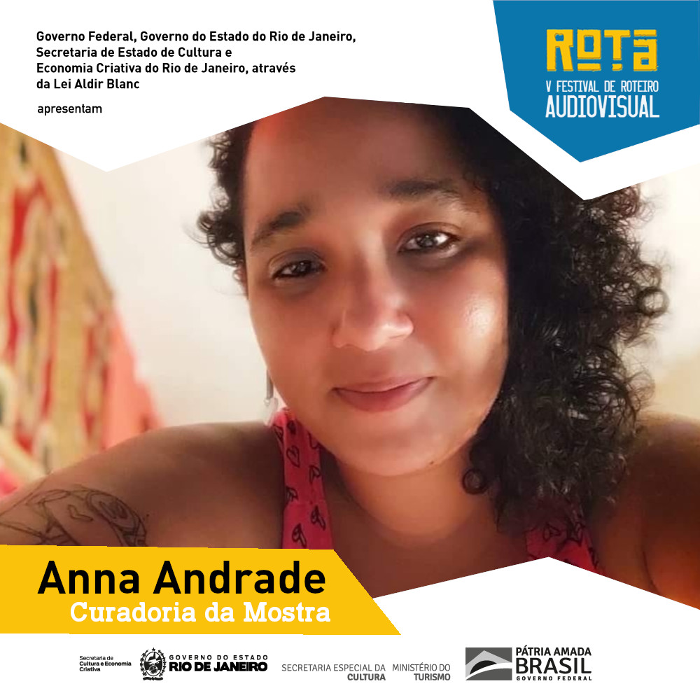 Diretora, produtora e distribuidora audiovisual, tem especialização em Gestão de Projetos e é a fundadora da Tarrafa, produtora independente localizada no Recife. Trabalha com desenho e gestão de projetos, produção e produção executiva, tradução e legendagem, atividades de formação e distribuição. É produtora e curadora da Semana do Audiovisual Negro, curadora do ROTA – Festival de Roteiro Audiovisual e tem 6 anos de experiência em planejamento e estratégia de distribuição de curtas e longas.
-
CAROLINA ALVES PACHECO
Curadora
 Bacharel em Cinema pela Universidade Federal de Santa Catarina, atua em diferentes ramos do Audiovisual. Com experiência de maior destaque no departamento de Arte em projetos independentes, editais e publicitários. Atualmente, integra a produção colaborativa e curadoria do Sessão Cinemática em Florianópolis.
Bacharel em Cinema pela Universidade Federal de Santa Catarina, atua em diferentes ramos do Audiovisual. Com experiência de maior destaque no departamento de Arte em projetos independentes, editais e publicitários. Atualmente, integra a produção colaborativa e curadoria do Sessão Cinemática em Florianópolis.
-
GIAN KAUFFMAN
Curador
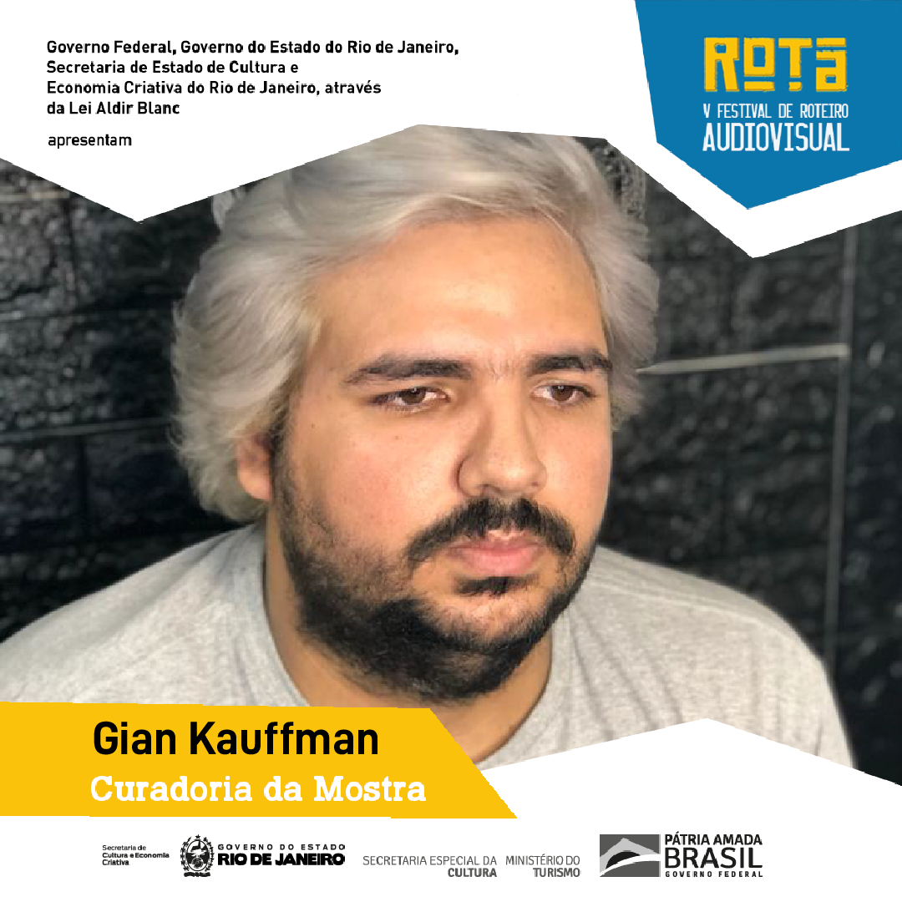 Formado em Comunicação Social pela Estácio, especialista em roteiro pela UVA, amante de roteiro e do audiovisual. Pesquisador sobre a influência das multitelas na evolução narrativa contemporânea. Possui experiência na construção e scriptdoctoring de roteiros de animações, novelas, curtas-metragens de diversos gêneros e roteiros para o YouTube. Atualmente atua como roteirista e produtor audiovisual na YDUQS, com foco no desenvolvimento de roteiros para vídeos acadêmicos.
-
GUSTAVO GERARD
Curador
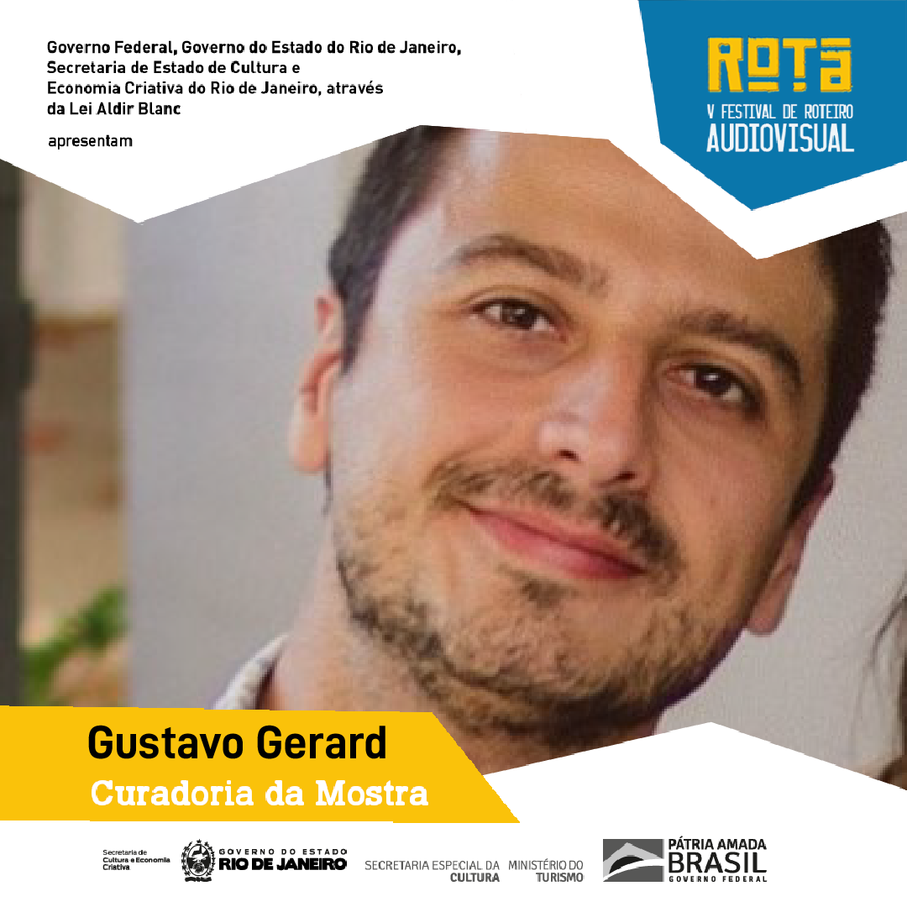 Roteirista e ator, Gustavo Gerard iniciou a sua carreira sendo um dos finalistas do Globolab, primeiro concurso de webséries da Rede Globo. Posteriormente, trabalhou na emissora escrevendo uma série inédita de comédia e colaborou no desenvolvimento do programa Lazinho com Você, de Lázaro Ramos. Também foi um dos roteiristas dos longas-metragens "Fora de Cena" e "Love in Quarantine", ambos com estreia em 2021, além de ter uma série autoral contemplada no BRDE-FSA PRODAV TVs Públicas 2018.
-
LUAN SANTOS
Curador
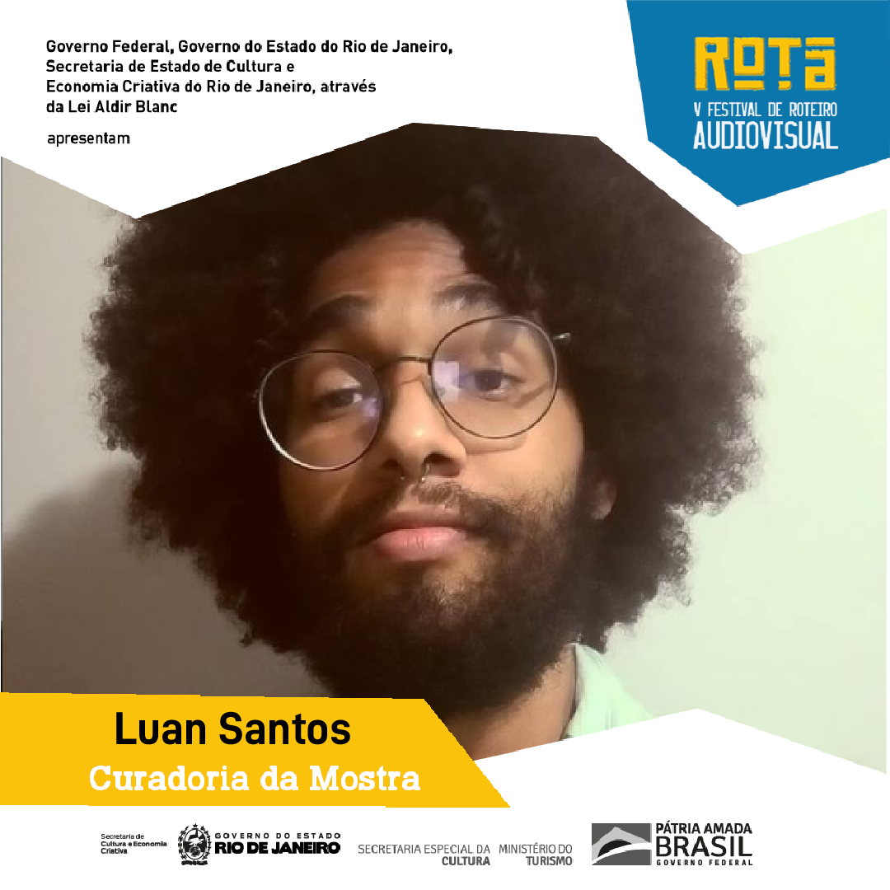 Luan Santos é graduando em Cinema e Audiovisual pela UFRB em Cachoeira, onde atua como diretor geral, diretor de fotografia, montador e colorista em curtas-metragens independentes e universitários. Como integrante do PET-Cinema pesquisa a interface cinema e educação, realizando atividades como o curso online "Produção na Restrição" em 2020. Atuou como curador do VII CineVirada - Festival de Cinema Universitário da Bahia e da 2ª ManduCA - Mostra de Cinema Infantojuvenil de Cachoeira. Escreve críticas de obras audiovisuais no "Viu&Review". Como diretor, foi selecionado para as competitivas do 1º FIANb - Festival do Audiovisual Negro do brasil, 2ª Mostra de Cinema Negro de São Félix e First-Time Filmmaker Sessions 2021 com o videoclipe "Suíte Cachoeirana" composta por Mil Vinny's.
-
LUCAS PILOTO
Curador
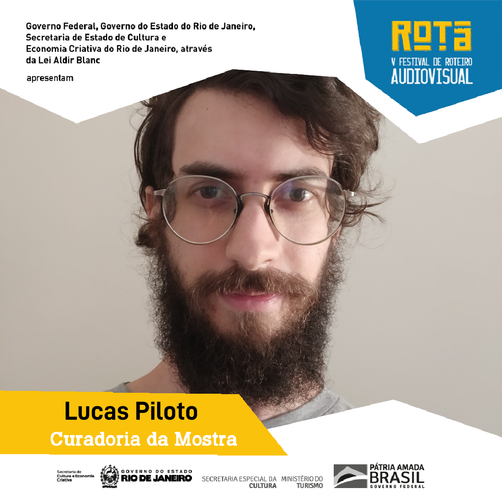 Lucas Piloto é formado em Audiovisual pela Universidade de São Paulo. Trabalhou como roteirista na produtora Los Bragas, onde desenvolveu projetos seriados de ficção e documentário para plataformas como Turner, Apple TV e YouTube Premium. Integrou também a sala de roteiro da série ficcional Lov3, desenvolvida para a Amazon Prime Video. Lucas recebeu, no ano de 2018, o prêmio de melhor roteiro por seu curta-metragem "Seja Bem-vindo!" pelo ROTA - II Festival de Roteiro Audiovisual.
-
MARCIO B. WEBER
Curador
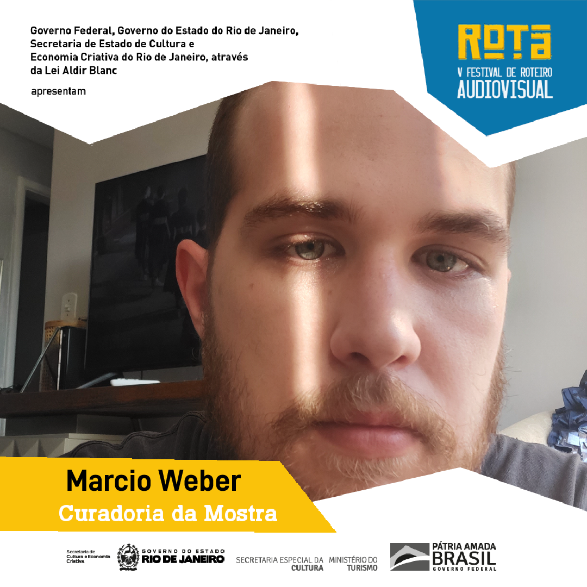 Interessado em formas plurais e múltiplas de como se articular narrativas por gêneros, vertentes e inclinações artísticas. É graduado em Cinema e Audiovisual pela UNESA.
-
RAFAEL RIBEIRO
Curador
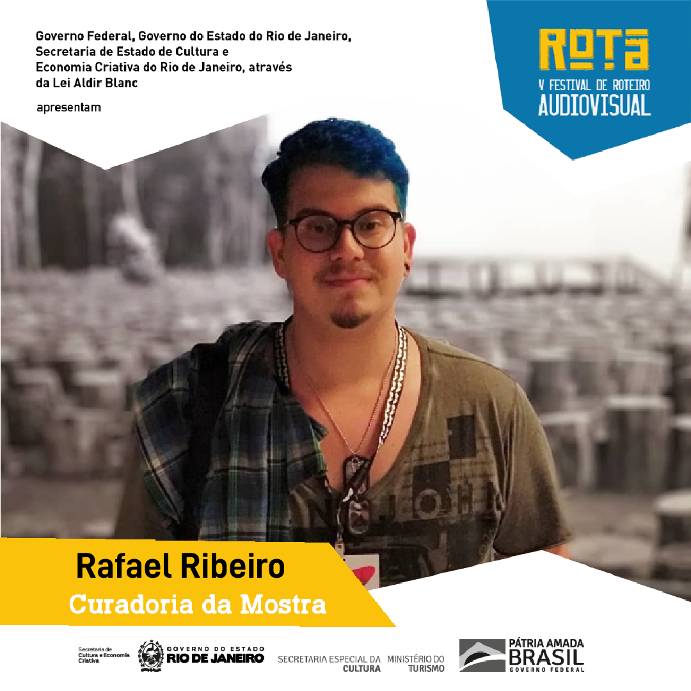 Mestre em Comunicação pela Universidade Federal Fluminense, com especialidade em Mídia, Cultura e Produção de Sentido. Seu trabalho e pesquisa exploram questões de diversidade sexual, cultura pop, televisão, documentário e música. É cineasta independente, atuando como diretor e roteirista nos curtas-metragens Emergir (2013), A Filha do Homem (2014), Invasão Drag (2018) e Vinde Como Estais (2019). Seus trabalhos circularam por mais de 50 festivais nacionais e internacionais, incluindo Festival do Rio, Visões Periféricas, ROTA, Recifest, For Rainbow, Curta O Gênero e Rio Festival de Gênero e Sexualidade. Foi curador no Sarau DJs da UFRB em 2012, da Mostra Audiovisual ARTEPOP em 2020 e do 1º Pajubá - Festival de Cinema LGBTI+ do Rio de Janeiro em 2021. Como roteirista, possui dois prêmios ROTA nas categorias Melhor Roteiro de Documentário pelo Juri Popular (2019) e Melhor Curta com Tema Social (2019) pelo filme Vinde Como Estais. Participou do 1º Sesc Argumenta (2018) e foi finalista do concurso LATINX 2020 - Categoria Brasil com o projeto Tudo Que Eu Sou.
-
ROBERTA ROSSENER
Curadora
 Roberta Rossener é formada em Letras pela Universidade de São Paulo e pós-graduada em Roteiro Audiovisual pela FAAP. Lançou seu primeiro curta-metragem em 2015 e, desde então, atuou como roteirista e diretora de arte em curtas pela Academia Internacional de Cinema e Festival do Minuto. Em 2019, seu roteiro "Tata" foi selecionado para o Laboratório de Desenvolvimento de Projetos de Curtas-Metragens do Sesc Santos. No mesmo ano, escreveu seu primeiro longa, "O punk e a mina do funk", sob orientação do professor José Roberto Sadek. Atualmente dedica-se ao projeto literário "Infinitas", coletânea de contos sobre o feminino.
Roberta Rossener é formada em Letras pela Universidade de São Paulo e pós-graduada em Roteiro Audiovisual pela FAAP. Lançou seu primeiro curta-metragem em 2015 e, desde então, atuou como roteirista e diretora de arte em curtas pela Academia Internacional de Cinema e Festival do Minuto. Em 2019, seu roteiro "Tata" foi selecionado para o Laboratório de Desenvolvimento de Projetos de Curtas-Metragens do Sesc Santos. No mesmo ano, escreveu seu primeiro longa, "O punk e a mina do funk", sob orientação do professor José Roberto Sadek. Atualmente dedica-se ao projeto literário "Infinitas", coletânea de contos sobre o feminino.
-
RODRIGO ASSAD
Curador
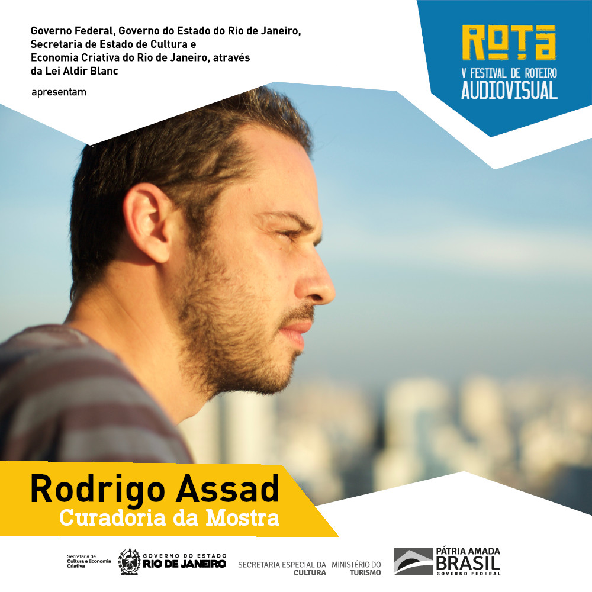 Graduado em Cinematografia pela Columbia College em Chicago (EUA), Rodrigo Assad é professor de direção na Escola de Cinema Darcy Ribeiro e atua como Diretor de Cena e Diretor de Fotografia no mercado. Entre as peças publicitárias que dirigiu para televisão e internet estão nomes como Bradesco, Itaú, Santander, Vale, Eletrobras, L’Óreal, além de chamadas da programação da grade Globosat para programas como “Que Marravilha,” “Superbonita,” “Saia Justa” entre outros. Com um perfil criativo e técnico, o diretor teve ampla atuação em outras áreas do mercado como produtor, assistente de direção, editor, motion designer e finalizador em publicidades, tv e longas.
-
THIAGO DAVID
Curador
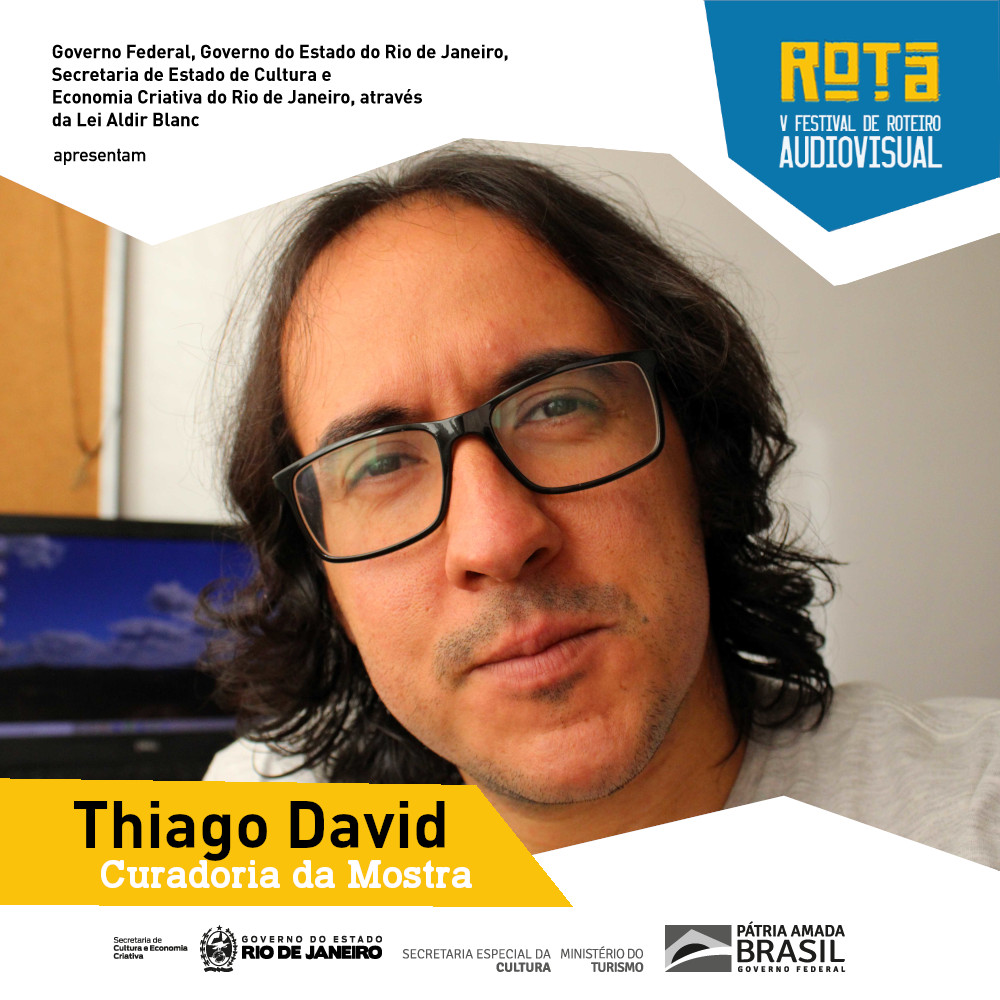 Thiago David é autor dos livros A Poesia da Notícia, A Ecologia da Cidade e Um caminho para Santiago. Escreveu para a 13a e 14a temporada de Detetives do Prédio Azul como colaborador e para a 2a temporada da série documental Decola. Fruto do curso de Roteiro na Escola de Cinema Darcy Ribeiro.
-
AMANDA AOUAD
Jurada
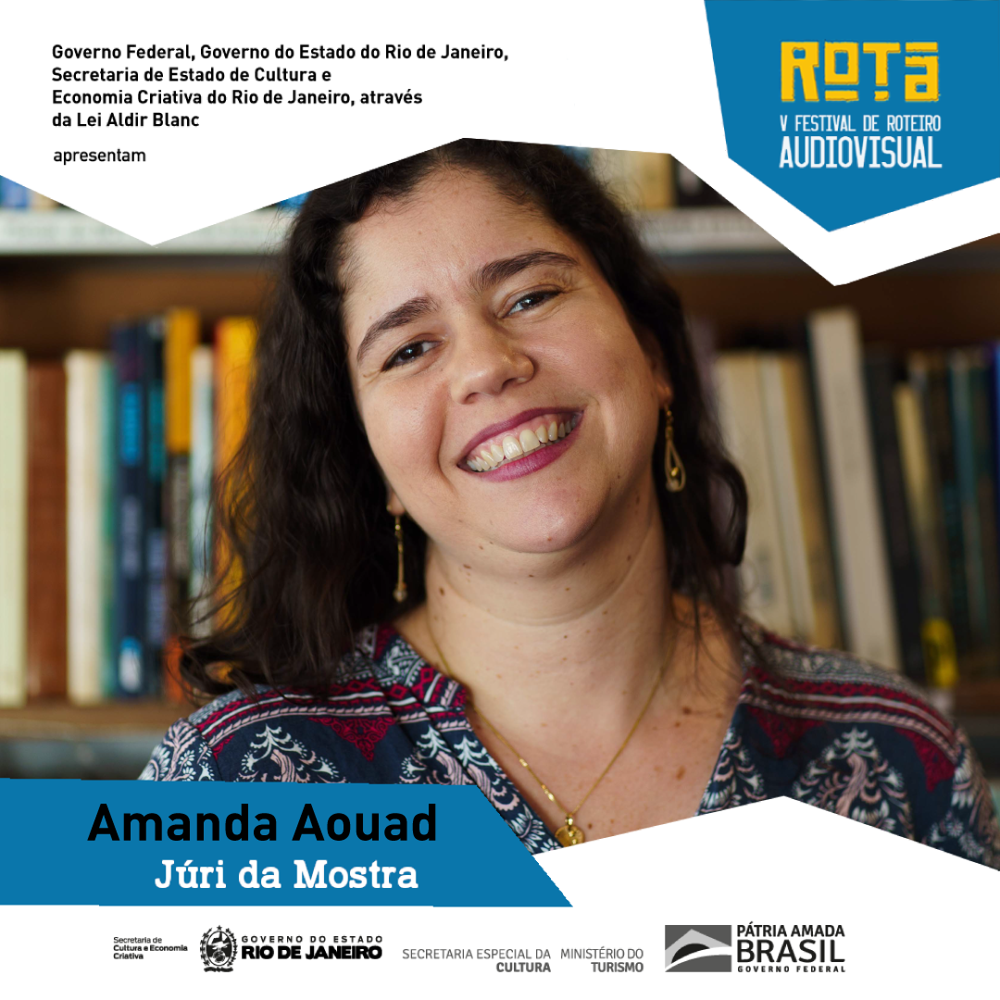 Doutora em Comunicação e Culturas Contemporâneas pela UFBA, pesquisa linguagem cinematográfica e narrativa desde 2003 e é integrante do grupo de pesquisa ATevê. Roteirista desde 2005, participou do Núcleo Anima Bahia e do Núcleo TV Show, coordenado por Doc Comparato. Atua também como consultora de roteiro e crítica cinematográfica, é editora do site CinePipocaCult e membro da Abraccine. Professora da Unifacs nos cursos de Jornalismo e Publicidade e Propaganda, e do projeto Estação do Drama (UFBA).
-
CLEMENTINO JR.
Jurado
 Cineasta, educador audiovisual, doutorando em educação (GEASur/UNIRIO) e fundador do CAN - Cineclube Atlântico Negro.
Cineasta, educador audiovisual, doutorando em educação (GEASur/UNIRIO) e fundador do CAN - Cineclube Atlântico Negro.
-
JUCA BADARÓ
Jurado
 Jornalista e realizador audiovisual, assinou roteiro e direção de quatro filmes de curta-metragem e um longa-metragem, o documentário “As Cores da Serpente”, rodado em Angola e contemplado, em 2019, com Edital de Distribuição da Agência Nacional de Cinema (ANCINE). “As Cores da Serpente” foi o primeiro documentário gravado em Angola a entrar no circuito comercial do cinema brasileiro, onde foi exibido em seis capitais do país nas salas do Espaço Itaú de Cinema. Desde 2017, coordena, junto com Renata Matos, o Cineclube Fruto do Mato, em Lençóis, na Chapada Diamantina. Graduado em Jornalismo, com especialização em Literatura Brasileira pela Universidade do Estado da Bahia (UNEB) e Mestrado em Memória pela Universidade Estadual do Sudoeste da Bahia (UESB), Juca Badaró, atualmente, está dedicado aos estudos literários sobre a recepção crítica do escritor Jorge Amado, no Doutorado em Memória.
Jornalista e realizador audiovisual, assinou roteiro e direção de quatro filmes de curta-metragem e um longa-metragem, o documentário “As Cores da Serpente”, rodado em Angola e contemplado, em 2019, com Edital de Distribuição da Agência Nacional de Cinema (ANCINE). “As Cores da Serpente” foi o primeiro documentário gravado em Angola a entrar no circuito comercial do cinema brasileiro, onde foi exibido em seis capitais do país nas salas do Espaço Itaú de Cinema. Desde 2017, coordena, junto com Renata Matos, o Cineclube Fruto do Mato, em Lençóis, na Chapada Diamantina. Graduado em Jornalismo, com especialização em Literatura Brasileira pela Universidade do Estado da Bahia (UNEB) e Mestrado em Memória pela Universidade Estadual do Sudoeste da Bahia (UESB), Juca Badaró, atualmente, está dedicado aos estudos literários sobre a recepção crítica do escritor Jorge Amado, no Doutorado em Memória.
-
MARTA NEHRING
Jurada
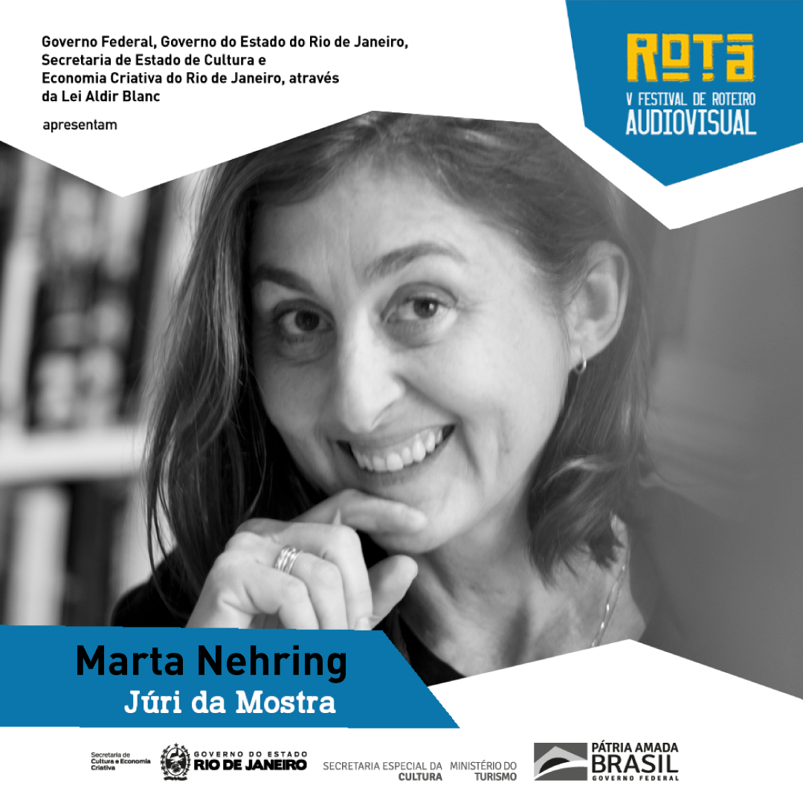 Marta Nehring é mestre em Teoria Literária (USP), doutora em cinema (USP), professora de narrativa audiovisual e roteiro em instituições como Sesc, AIC, B_arco e Faap. Estreou como publicitária e ghost writer. Ganhou prêmios com o documentário 15 Filhos e o roteiro do longa Eu, eu, eu José Lewgoy. Entre outros jobs de roteiro e script-doc, colaborou nas novelas Tititi, Sangue Bom e A Lei do Amor, de Maria Adelaide Amaral e Vincent Villari. É co-roteirista do longa Tudo o que aprendemos juntos. Na TV roteirizou a série Mil Dias (History), e indicada ao Grande Prêmio do Cinema Brasileiro de 2019 como “Melhor série documental brasileira” e alguns episódios de "Cena Inquieta", vencedor do prêmio APCA.
Regulamento
1) OBJETIVO
1.1 A Mostra Competitiva de Curtas-metragens do V ROTA – Festival de Roteiro Audiovisual tem o objetivo de promover, valorizar, qualificar e premiar roteiristas estudantes e/ou iniciantes por seus curtas–metragens de ficção e de documentários, e, com isso, abrir portas para sua carreira no mercado audiovisual.
1.2 Serão aceitas inscrições de estudante e de iniciante maior de idade (dentro do período de inscrição) que tenha no máximo 03 (três) roteiros de curta-metragem filmados e exibidos em festival, mostra de cinema presencial e/ou on line, em TV aberta ou fechada, e plataformas de streaming, e que não tenha nenhum roteiro de longa ou episódio de série, filmado e exibido em festival, mostra de cinema presencial e/ou on line, em TV aberta ou fechada, e plataforma de streaming.
1.2.1 O inscrito deverá atestar a veracidade da informação através de Termo de Responsabilidade, conforme modelo aqui, a ser preenchido, assinado e anexado ao formulário de inscrição.
1.2.2 Candidatos que têm 01 (um) roteiro de longa ou 01 (um) episódio de série ou 04 (quatro) roteiros de curta filmados e exibidos nos meios citados acima, não são elegíveis.
2) DATA E LOCAL
2.1 O V ROTA – Festival de Roteiro Audiovisual acontecerá de 16 a 21 de março de 2021, no formato on line, através de plataformas e nas redes sociais do ROTA.
2.2 Os filmes selecionados para a Mostra Competitiva de Curtas-metragens ficarão disponíveis para exibição e votação popular de 16 de março até as 14h do dia 21 de março no site do ROTA (www.rotafestival.com). A Cerimônia de Premiação ocorrerá no dia 21 de março de 2021, quando os vencedores serão anunciados ao vivo.
3) INSCRIÇÕES
3.1 A inscrição para a Mostra Competitiva de Curtas-metragens do V ROTA – Festival de Roteiro Audiovisual é gratuita e estará aberta a partir das 00h00 de 20 de janeiro até as 23h59 de 03 de fevereiro de 2021, horário de Brasília.
3.1.1 Não haverá prorrogação do prazo das inscrições, salvo em caso de indisponibilidade técnica do site.
3.2 Estão habilitados a participar estudantes e/ou iniciantes, maiores de 18 anos, brasileiros ou naturalizados, residentes dentro ou fora do Brasil.
3.3 Só serão aceitos curtas-metragens de ficção ou documentários, de no máximo 20 (vinte) minutos incluindo os créditos, com produção brasileira (podendo ser em coprodução estrangeira).
3.4 Só serão aceitos filmes com roteiro escrito por brasileiros ou naturalizados, residentes ou não no Brasil, falados em português, podendo haver apenas expressões em outras línguas.
3.5 Cada candidato poderá inscrever até 03 (três) filmes de curtas-metragens de ficção e/ou documentário. Para cada filme será contabilizada uma nova inscrição.
3.6 Os filmes inscritos na Mostra Competitiva de Curtas-metragens do V ROTA – Festival de Roteiro Audiovisual deverão obedecer aos seguintes critérios:
a) Possuir até 20 (vinte) minutos de duração, incluindo créditos,
b) Possuir formato digital em FULL HD para exibição,
c) Não ter sido exibido publicamente antes do dia 21 de março de 2019.
3.7 A inscrição dar-se-á através do seguinte processo:
3.7.1 Ler o Termo de Responsabilidade (conforme modelo aqui) e, estando de acordo, preencher por inteiro, datar, assinar, imprimir, escanear, salvar no seu computador e anexar ao Formulário de Inscrição (conforme modelo aqui) da Mostra Competitiva de Curtas-metragens.
3.7.2 Preencher o Formulário de Inscrição da Mostra Competitiva de Curtas-metragens por completo. O não preenchimento dos campos obrigatórios e a falta de documentos em anexo impossibilitam a conclusão da inscrição.
3.7.3 Anexar ao Formulário os seguintes documentos:
a) Termo de Responsabilidade, com data e assinatura do candidato;
b) Documento de identidade com foto (frente e verso), podendo ser RG, carteira de motorista, passaporte, carteira de trabalho ou outro documento oficial, para a devida identificação e comprovação da maioridade do candidato,
c) Link do curta de Vimeo ou YouTube, lembrando que o link deverá estar liberado para exibição sem senha. Os links com senha não serão avaliados.
d) Sinopse de até 05(cinco) linhas em pdf;
e) Até 03(três) fotos do filme;
f) Carta de autorização do(s) coautor(es), escaneada em pdf, com data e assinatura do(s) mesmo(s), caso se aplique.
3.7.4 Termo de Responsabilidade e Carta de Autorização do(s) coautor(es) sem assinatura não têm validade, desclassificando a inscrição.
3.8 Não será aceita nenhuma documentação incompleta e/ou enviada após o encerramento do prazo de inscrições.
3.9 O ROTA não se responsabiliza por qualquer situação decorrente da ausência de registro (do roteiro) na Biblioteca Nacional, conforme consta no Termo de Responsabilidade.
3.9.1 A organização do V ROTA – Festival de Roteiro Audiovisual também se reserva o direito de prorrogar o prazo de inscrições, conforme julgue adequado, anunciando tal informação em seus canais de comunicação.
3.9.2 O ROTA não se responsabiliza por quaisquer despesas referentes à participação dos candidatos nesta Mostra.
3.9.3 O ROTA não se responsabiliza pelas consequências de quaisquer informações inverídicas que venham a ser apresentadas por candidatos participantes desta Mostra Competitiva de Curtas-metragens do V ROTA, reservando-se a prerrogativa de desclassificar, a qualquer momento, os responsáveis por quaisquer infrações ao presente Regulamento.
3.9.4 Ao inscrever seu(s) curta(s), o roteirista afirma anuência e concordância com os termos constantes deste Regulamento, afirmando ainda que todas as informações fornecidas à organização do ROTA por ocasião dessa inscrição são verdadeiras.
3.9.5 Ao inscrever o curta, a produção autoriza previamente sua exibição on line em plataforma digital na web, durante a Mostra Competitiva de Curtas-metragens do V ROTA – Festival de Roteiro Audiovisual, nos dias 16, 17, 18, 19, 20 e 21 de março de 2021.
3.9.6 No ato da inscrição, o responsável pela mesma autoriza o ROTA, através de seus organizadores, a divulgar a exibição do filme, por meio de fotos e frames do curta-metragem solicitados pelos organizadores da Mostra Competitiva de Curtas-metragens no ato desta inscrição, bem como os nomes relacionados na ficha técnica.
3.9.7 Os realizadores encarregados das inscrições das obras audiovisuais devem ter a garantia da obtenção e liberação de direitos conexos relativos à inclusão de obras musicais e audiovisuais e imagem e som de voz de indivíduos porventura incluídos na obra inscrita, sendo inteiramente responsáveis por quaisquer ônus decorrentes da ausência de tais liberações.
4) PROCESSO SELETIVO
4.1 Habilitação: etapa em que serão verificadas se todas as informações e documentos foram enviados.
4.1.1 Apenas os projetos habilitados passarão para etapa de seleção e serão avaliados.
4.2 Seleção: a primeira etapa será feita por uma Comissão de Curadores, que irá selecionar no mínimo 12 (doze) filmes.
4.3 Compõem a Curadoria profissionais atuantes no mercado audiovisual, escolhidos pela organização do V ROTA – Festival de Roteiro Audiovisual. As decisões da Curadoria são soberanas e irrecorríveis.
4.4 Os filmes selecionados para a Mostra Competitiva de Curtas-metragens do V ROTA – Festival de Roteiro Audiovisual serão divulgados no site e nas páginas das redes sociais do ROTA (Facebook, Instagram e Twitter) até o dia 11 de março de 2021.
4.5 Durante a Mostra, que acontecerá nos dias 16, 17, 18, 19, 20 e 21 de março, a Comissão de Júri Oficial, composta por profissionais atuantes no mercado audiovisual, escolhidos pela organização do ROTA, avaliará os finalistas da Mostra Competitiva de Curtas-metragens do V ROTA.
4.5.1 Além do Júri Oficial teremos o Júri Popular, com votação aberta ao público de 16 de março até as 14h do dia 21 de março de 2021, data da Cerimônia de Premiação.
4.6 A organização do ROTA reserva-se o direito de selecionar e premiar, ou não, quaisquer filmes, conservando para si todas as prerrogativas referentes a esses processos de seleção, inclusive a de não premiar ou selecionar os filmes para quaisquer prêmios.
4.7 CRITÉRIOS DE AVALIAÇÃO
4.7.1 Critérios que serão utilizados na avaliação dos filmes:
a) Qualidade da estrutura narrativa;
b) Qualidade da construção de personagens;
c) Qualidade da construção dos diálogos;
d) Originalidade
4.8 A Comissão da Curadoria será orientada a utilizar uma pontuação de 0 a 2,5 para cada um dos critérios de avaliação, estipulados neste Regulamento, com exceção do item d) Originalidade que receberá 0 (zero) ou 2.
5) PREMIAÇÃO
5.1 Os filmes selecionados concorrerão em 04 (quatro) categorias:
a) Melhor Roteiro de Ficção do Júri Oficial: troféu e parecer resumido do Júri e o valor de R$1.000,00 (mil reais) sujeito à retenção de impostos;
b) Melhor Roteiro de Documentário do Júri Oficial: troféu e parecer resumido do Júri e o valor de R$1.000,00 (mil reais) sujeito à retenção de impostos;
c) Melhor Roteiro de Ficção do Júri Popular: troféu;
d) Melhor Roteiro de Documentário do Júri Popular: troféu.
5.1.1 Também serão concedidos Certificados dos parceiros Rede Sina, Cardume e Kinobox, que escolhem cada qual um Melhor Curta-metragem, entre os filmes de ficção ou documentário.
5.2 Outras premiações paralelas poderão ser criadas e serão divulgadas através do site e páginas das redes sociais (Facebook, Instagram e Twitter) do ROTA.
5.3 A escolha dos premiados nas duas primeiras categorias citadas acima será feita pelo Júri Oficial e as duas últimas pelo Júri Popular, através de votação pelo site do ROTA.
5.4 O Júri Oficial será composto por profissionais atuantes no mercado audiovisual e um estudante, escolhidos pela organização da Mostra. As decisões do Júri Oficial serão soberanas e irrecorríveis, não cabendo recursos.
5.5 O resultado das premiações do Júri Oficial e do Júri Popular será divulgado na Cerimônia de Premiação que acontecerá no dia 21 de março de 2021, e posteriormente publicado no site e páginas das redes sociais (Facebook, Instagram e Twitter) do ROTA.
6) OUTROS
6.1 Situações excepcionais ou casos omissos a este regulamento serão decididos pela organização do ROTA.
7) CONTATOS
7.1 Dúvidas decorrentes do presente regulamento deverão ser encaminhadas ao e-mail: rotamostra2021@gmail.com.
7.2 Para acompanhar as notícias do ROTA acesse:
Facebook: https://www.facebook.com/rotafestival/
Site: http://rotafestival.com
Instagram: @rotafestival
Twitter: @rotafestival